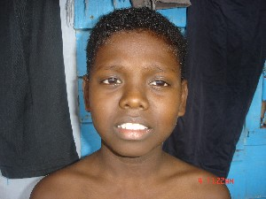

ɸ
ɸɑɽo फाड़ो Etym: Bo; बो. N सं. injury/ wound; चोट/ घाव. SD: illness, रोग.
 |
 ɸile फीले VAR: file फीले; er-pʰile एरफीले; pile पीले; ɸive फीवे; pʰile फीले. N सं. teeth; दांत. meŋerpʰile मेङेरफीले. my teeth. मेरे दांत. dekɑ-er-pʰile kɑʈʰuɔ देकाएरफीले काठूऔ. A new tooth is coming out. नया दांत आ रहा है. SD: body part term, शारीरिक अंग शब्दावली.
ɸile फीले VAR: file फीले; er-pʰile एरफीले; pile पीले; ɸive फीवे; pʰile फीले. N सं. teeth; दांत. meŋerpʰile मेङेरफीले. my teeth. मेरे दांत. dekɑ-er-pʰile kɑʈʰuɔ देकाएरफीले काठूऔ. A new tooth is coming out. नया दांत आ रहा है. SD: body part term, शारीरिक अंग शब्दावली.
ɸorɑŋo फोराङो N सं. wood; लकड़ी. SD: flora, फूल-पत्ती.Environmental
ɸotɑle फोताले VAR: poːttɑle पोऽत्ताले; fɔtɔle फौतौले. N सं. a big long arrow used for hunting pigs; सूअर का शिकार करने वाला एक लम्बा बड़ा तीर. SD: hunting & gathering, शिकार एवं संचय सम्बंधी. SEE: uro ‘rope (of a harpoon arrow)’ ‘रस्सी (हारपून भाले की) ऊरो ’.Environmental
ɸoʈɑ फोटा VAR: pʰotɑ फोता. V क्रि. float; तैरना; बहना. ɸoʈɑ-kɔm फोटा कौम. He swims. वह तैरता है।.